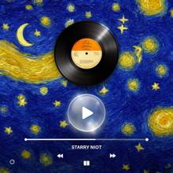
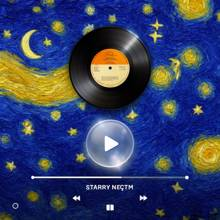

World Knowledge — A music player interface design, the background is a flowing Van Gogh
A music player interface design, the background is a flowing Van Gogh starry sky, the play button is in a glass imitation style, and the album cover is in a retro vinyl record style.
Direct — one call, no iterationContinuum — Kimi K3 + FLUX.2-dev
Judge — Direct
FAILWorld Knowledge — The background of the image depicts a realistic starry sky, likely a photograph or realistic rendering of a galaxy with numerous stars and cosmic dust clouds. This is visually distinct from the iconic, swirling, and painterly style of Van Gogh's 'The Starry Night' painting.
FAILCompound - Feature Matching — The image shows a central element styled as a retro black vinyl record, which serves as the album cover. On the record's label, there is a play button with a glossy, translucent finish, resembling a glass imitation style. However, the background is a realistic depiction of a galaxy, not the flowing, painterly Van Gogh starry sky requested in the prompt.
Judge — Continuum
PASSWorld Knowledge — The image background is a depiction of the famous painting 'The Starry Night' by Vincent van Gogh, characterized by its distinctive swirling blue sky, bright yellow stars, and a prominent crescent moon.
PASSCompound - Feature Matching — The image combines several features as requested: the background is a painting in the style of Van Gogh's 'The Starry Night' with its characteristic flowing patterns. The central play button is depicted within a translucent, spherical shape that mimics a glass or bubble effect. The element representing the album cover is a black vinyl record with a central label, fitting the retro style.
What the agent did
Thinking
Generate an image: a music player UI design with a Van Gogh starry night flowing background, glass-style play button, retro vinyl record album cover. Use flux2-dev.
Step 1 — `generate_image`
{
"model": "flux2-dev",
"prompt": "A sleek music player app interface design. The background is a flowing Van Gogh \"Starry Night\" style sky \u2014 swirling cobalt blue and golden yellow impasto brushstrokes, luminous stars and crescent moon, painted texture filling the whole screen. Centered UI: a circular retro vinyl record as the album cover, black grooved vinyl with a warm orange-and-cream vintage label in the middle, slowly spinning sheen. Below it, a large circular play button in glassmorphism style \u2014 frosted translucent glass with soft refraction, subtle inner glow, white triangle play icon in the center, delicate specular highlights. Thin elegant progress bar, minimal white song title text and small skip/previous buttons. Modern UI/UX mockup, high fidelity, clean typography, harmonious deep blue and gold palette."
}
Result img_0
Thinking
The image looks quite good. Issues: the text "MASE UOON" is gibberish, and there are duplicated pause icons (two pairs of pause bars). The play button is glass style — good. Vinyl record — good. Background — good. I could fix the text. Let me zoom in on the text area. The title "MASE UOON" is nonsense. Also the double pause icons are a glitch. Let me edit: replace gibberish text with a proper title, and remove duplicate pause icons. Actually the prompt doesn't specify text content. I could just clean it up. Let me do an edit to fix the control row: single clean set of controls and a legible title. Two changes at once might leak; do one edit for the bottom control area.
Step 2 — `inspect_region`
{
"image": "img_0",
"padding": 0.2,
"roi": "the song title text and playback controls at the bottom"
}
The crop returned a very small/dark image? It looks like a tiny thumbnail — maybe the crop failed visually. The region was the bottom 22% but the output looks almost black with tiny marks. Perhaps display issue. Let me crop a taller region.
The coordinates I used hit the play button area instead. The image is 768x768 (as displayed). Bottom area: text "MASE UOON" around y=645-660, controls around y=690-740. Let me crop [100, 620, 768, 768].
The image is 1024x1024 presumably (the display showed 768 but actual might be 1024). My crop [60,625,768,768] again hit the play button. So actual size must be larger. Let's assume 1024x1024. Text was at ~645/768 ≈ 0.84 → y≈860. Controls at ~0.90-0.96 → y≈920-985. Crop [80, 840, 1024, 1024].
Confirmed: "MASE UOON" gibberish and duplicated pause icons (two rows). I'll edit: change the title to "STARRY NIGHT" and clean up controls to a single row of skip-previous / pause / skip-next. One edit with edit_image, targeted.
Step 7 — `edit_image`
{
"image": "img_0",
"model": "flux2-dev",
"prompt": "At the bottom of the screen, replace the song title text \"MASE UOON\" with \"STARRY NIGHT\" in the same clean white sans-serif font, and replace the duplicated stacked pause icons with a single tidy row of three controls: skip-back, one pause icon, skip-forward."
}
Result img_5

Thinking
Controls are now clean (single pause icon, skip buttons aligned). But the text reads "STARRY NIOT" — the G H is wrong. Need to fix text: "STARRY NIOT" → "STARRY NIGHT". Do a targeted edit naming the incorrect string and correct one.
Model
The controls are now clean, but the title reads "STARRY NIOT" — one more targeted fix for the text.
Step 8 — `edit_image`
{
"image": "img_5",
"model": "flux2-dev",
"prompt": "Correct the song title text: change \"STARRY NIOT\" to \"STARRY NIGHT\", keeping the same white sans-serif font, size and position."
}
Result img_6

Thinking
Now it reads "STARRY NEÇTM" — worse. The model is struggling with this text. Options: try another seed on the same edit, or try a shorter/simpler word. Let me try again with the same prompt but different seed (2-3 seeds rule). Alternatively, replace the title with a simpler word like "STARRY NIGHT" is proving hard. Maybe try "VINCENT" or "MIDNIGHT"? Simpler string might render better. Let me try once more with a different seed first.
Model
The text got worse ("STARRY NEÇTM"). Trying a different seed with the same fix.
Step 9 — `edit_image`
{
"image": "img_5",
"model": "flux2-dev",
"prompt": "Correct the song title text: replace \"STARRY NIOT\" with the words \"STARRY NIGHT\" spelled S-T-A-R-R-Y N-I-G-H-T, same white sans-serif font, size and position.",
"seed": 7
}
Result img_7
Thinking
Now the text reads "STARRY NIGHT" correctly. Let me verify with a zoom on the text region to be sure, then mark best. The text looks correct at this scale. Let me quickly inspect the crop to confirm glyphs.
Model
The title now reads "STARRY NIGHT". Let me verify the text glyphs at full resolution before finalizing.
Text confirmed: "STARRY NIGHT" spelled correctly. All elements present: Van Gogh starry sky background, glass-style play button, retro vinyl record album cover, clean controls. Mark img_7 as best and stop.
Step 11 — `mark_best`
{
"image": "img_7",
"reason": "All requested elements present and correct: Van Gogh starry sky background, glassmorphism play button, retro vinyl record album cover, clean control row, and legible \"STARRY NIGHT\" title."
}
Model
The design is complete. The final image has everything the prompt asked for: - **Background:** a flowing Van Gogh "Starry Night" sky — swirling cobalt-blue impasto brushstrokes with golden stars and a crescent moon filling the entire screen. - **Play button:** a large frosted-glass (glassmorphism) sphere with soft refraction, inner glow, and a white triangle play icon. - **Album cover:** a retro vinyl record with visible grooves, a glossy sheen, and a vintage orange-and-cream label. - **Supporting UI:** a thin progress bar, a clean row of skip/pause controls, and a legible "STARRY NIGHT" title — all in a harmonious deep blue and gold palette. Along the way I fixed two issues from the first draft: the duplicated pause icons were consolidated into a single tidy control row, and the garbled title text was corrected and verified letter-by-letter at full resolution.